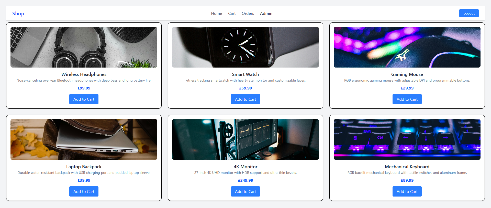

Hi, I'm Isaac Rideal
Backend Software Engineer · Java · Spring Boot · System Design
Final-year Software Engineering student at Manchester Metropolitan University (graduating 2027). Seeking a graduate backend role or summer 2027 internship in the North West.
About Me
I'm passionate about system design: how systems behave and fail under load, and how to keep codebases scalable, reliable and maintainable. I'm also drawn to cloud architecture and am currently studying for the AWS Certified Cloud Practitioner certification.
My current project, the D&D Party Finder, came from a problem I hit myself: I wanted to start playing Dungeons & Dragons but couldn't find a local group.
Outside tech, I worked as a cocktail bartender at Craft and Company in Chester, where I was promoted from bar back and learnt to work as a team under pressure during high-volume service.
Skills
| Area | Technologies |
|---|---|
| Languages | Java (primary) | JavaScript | Python |
| Backend | Spring Boot | Node.js | Express |
| Databases & Caching | PostgreSQL | MongoDB | Redis |
| Testing | JUnit 5 | Mockito |
| DevOps & Tools | Git/GitHub | Docker Compose | GitHub Actions (CI/CD) |
| System Design | Layered & Clean Architecture | SOLID | Design Patterns | Load Balancing | Caching |
| Frontend | React | Tailwind CSS |
Projects
In progress
D&D Party Finder
A Spring Boot API with a lightweight React frontend that helps players find local Dungeons & Dragons groups.
May 2026
Board Game Simulation
Built for MMU's Software Design & Architecture module, applying the Strategy, Decorator and Observer patterns within a clean Spring Boot architecture.
Nov 2025
E-Commerce Application
A full-stack e-commerce app where users can sign up, log in, browse products, add them to a basket and check out. Runs locally; setup instructions are in the README.

Certifications & Development
- AWS Certified Cloud Practitioner (in progress)
- Manchester Digital Grad Recharge scheme (2026): interview preparation and CV workshops with tech employers and recruiters